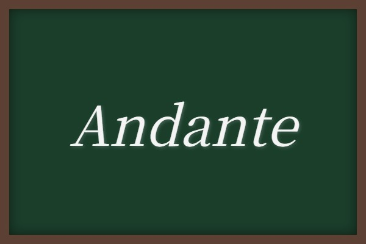
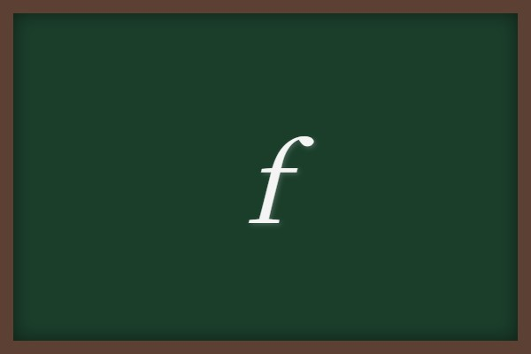
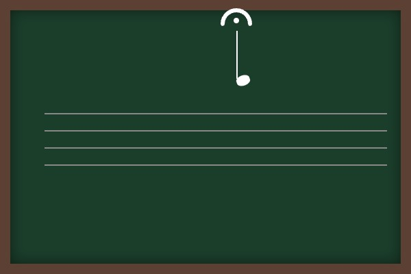
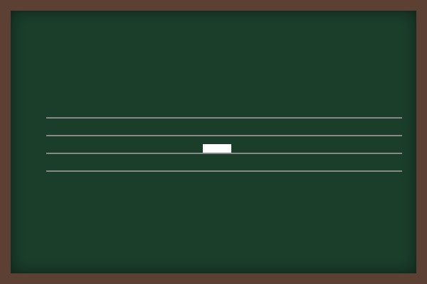

歌唱曲① (We'll Find The Way・光の道・主人は冷たい土の中に)
中学の音楽授業や定期テストで最初によく扱われる3つの歌唱曲について、作詞・作曲者や曲の特徴、そして楽譜を読むために必ず覚えておくべき重要な音楽記号をわかりやすく図解付きで解説します！
1. 歌唱曲3曲の基本データ
定期テストでは、各楽曲の作詞者・作曲者、拍子、調が記述式や選択問題で非常によく出題されます。対比させて確実に暗記しましょう！
① 「We'll Find The Way 〜はるかな道へ」
- 作詞・作曲：杉本竜一（すぎもとりゅういち）（「Believe」なども手掛けた作曲家です）
- 拍子：4分の4拍子
- 調：ハ長調（はちょうじょう）（シャープやフラットが何もつかない調です）
② 「光の道」
- 作詞：トモ子
- 作曲：名田綾子（なだあやこ）
- 拍子：4分の4拍子
- 調：ハ長調（はちょうじょう）
③ 「主人は冷たい土の中に」
- 作曲：S.C. フォスター（アメリカの作曲家。「おおスザンナ」などで有名です）
- 拍子：4分の4拍子
- 速度標語：Andante（アンダンテ）

速度記号 Andante：意味は「ゆっくり歩くような速さで」
2. 楽譜の強弱記号（テスト必須！）
曲の表現を決める「強弱」を表す記号です。アルファベットの読み方と意味を正しく結びつけましょう。

フォルテ (f)
意味：強く

メッゾ フォルテ (mf)
意味：少し強く
メッゾ ピアノ (mp)
意味：少し弱く
ピアノ (p)
意味：弱く
だんだん変化させる記号

クレシェンド（cresc. / ＜）：意味は「だんだん強く」
※逆向きの記号 ＞（デクレシェンド / decresc.）は、「だんだん弱く」という意味になります。
3. 音符を繋ぐ・伸ばす記号
音の長さをコントロールするための非常に重要な記号です。特に「タイ」の意味と「スラー」との違いはテスト超頻出です！

図1：隣り合う同じ高さの音をなめらかに繋ぐ「タイ」
① タイ (Tie)
すぐ隣の「同じ高さ」の2つの音符をつなぎ、1つの音として演奏する記号です。繋がれた後ろの音符の長さ分、音を伸ばし続けます。
タイと似た曲線記号に「スラー」があります。スラーは高さの違う複数の音符を繋ぎ、「音をなめらかに演奏する」という意味になります。同じ高さか、違う高さかで区別しましょう！
② フェルマータ (Fermata)

フェルマータ：意味は「その音符（または休符）をほどよくのばす」
4. 休符の知識（見分け方）
音を出さない長さを表す「休符」です。形が似ている休符の見分け方に注目しましょう。

2分休符（にぶきゅうふ）：4分休符「2つ分」休む長さ
2分休符は、五線の第3線の上にのる（帽子を上向きに置いたような形）のが特徴です。
・2分休符：第3線の上にのる ➔ 「2人（2分）が線の上に乗る」と覚える！
・全休符：第4線からぶら下がる（帽子が下向き） ➔ 「全員（全）がぶら下がる」と覚える！
5. 和音の表し方（コードネーム）
C、G、Am、Emなどのアルファベットで表された和音の呼び方をコードネームと呼びます。ギターやピアノの伴奏などでよく使われます。
🔥 定期テスト対策・暗記のコツ
① タイとスラーの識別
「タイ」と「スラー」の図を見て役割を説明させる問題は定番です。「同じ高さの音符を繋ぐのがタイ（音を足し算する）」「違う高さの音符をなめらかに演奏するのがスラー」と答えられるように整理しておきましょう！
② 2分休符の長さと位置
2分休符は「4分休符2つ分の長さ」です。また、五線譜のどの線の上にのっているかもよく問われます。「第3線の上」に描かれることを覚えておきましょう。
③ AndanteとFermataの意味
・Andante ➔ 「ゆっくり歩くような速さで」
・Fermata ➔ 「その音符（休符）をほどよくのばす」
この2つの音楽用語は記述問題で頻出です。漢字や送り仮名も正確に書けるように練習しましょう！